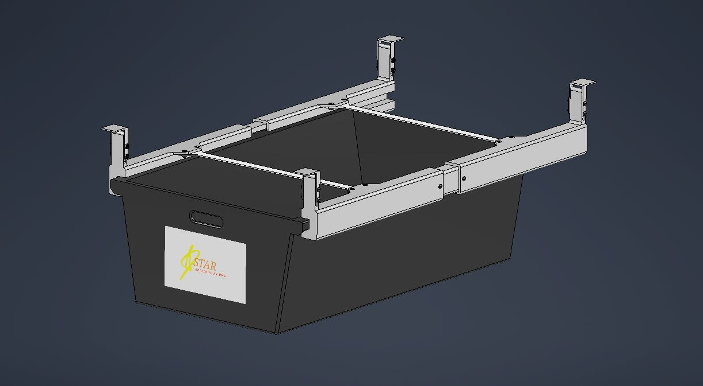

Mechanical Engineering Design, Innovation, and Entrepreneurship Course
Above: The final product design, modeled in Autodesk Inventor. This product is a storage drawer that mounts to the underside of a bed frame. It features expandable rails that can be adjusted to fit bed frames of various widths.
Above: A rendering of our product mounted on a bed frame.
Above: The final 3D printed model of our product. Although we used different materials for our analyses, we were limited to 3D printing for the actual production of our model. Our model had to be scaled down as well due to size limitations.
Above: The bill of materials used for the financial analysis of our product. Parts that were to be manufactured in house were labeled as "M&M Manufacturing", and those costs were estimated based on method of manufacturing.